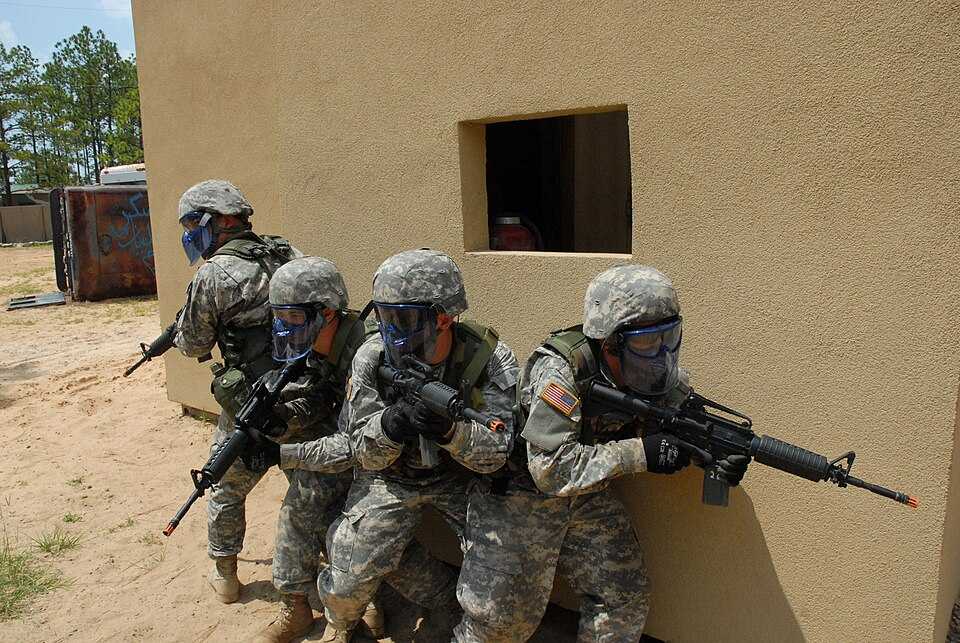

Airsoft vznikl v Japonsku v 70. letech 20. století. Japonské zákony tehdy zakazovaly civilní vlastnictví střelných zbraní, a tak zbrojní výrobci začali vyrábět repliky na plastové kuličky – BB (Ball Bearing). Tyto zbraně sloužily původně jako sběratelské předměty a pro tréninkové účely.
V 80. a 90. letech se airsoft rozšířil do Evropy a Severní Ameriky, kde se vyvinul do podoby organizovaného sportu. Dnes se hraje ve více než 50 zemích světa a má miliony hráčů.

Airsoft je používán i v armádním cvičení, populární je zde i paintball. avšak painball nemá stejnou realistiku jako airsoft.
Typy airsoftových zbraní
Airsoftové zbraně se dělí podle pohonného systému do čtyř hlavních kategorií. Každá má své výhody a hodí se pro jiný styl hry.
AEG – Automatická elektrická puška
AEG (Automatic Electric Gun) je nejrozšířenějším typem airsoftové zbraně. Pohání ji elektrický motor napájený akumulátorem, který pohybuje pístem a vytváří tlak vzduchu pro vystřelení kuličky. AEG zbraně jsou spolehlivé, snadno upgradovatelné a zvládají plně automatický, poloautomatický i dávkový režim střelby.
Typický výkon: 80–120 m/s (cca 300–400 FPS). Zásobník: 50–500 kuliček. Oblíbené modely: Tokyo Marui M4, ASG Scorpion Evo 3.
GBB – Plynová zbraň se zpětným rázem
GBB (Gas Blowback) zbraně využívají stlačený plyn (nejčastěji Green Gas nebo CO2) k vystřelení kuličky a zároveň k pohybu závěru zpět – tzv. blowback efekt. Tento realistický pocit ze střelby je hlavní předností GBB pistolí a pušek.
Nevýhodou je závislost výkonu na teplotě (plyn v chladu ztrácí tlak) a vyšší provozní náklady. Výkon: 70–110 m/s. Oblíbené modely: WE Glock 17, Tokyo Marui Hi-Capa.
Springer – Jarní zbraně
Nejjednodušší a nejlevnější typ. Každý výstřel vyžaduje ruční natažení závěru, který stlačí pružinu. Springer zbraně jsou vhodné pro začátečníky, sběratele a jako záložní zbraně. Nelze střílet automaticky.
Výkon: 50–80 m/s. Cena: od 200 Kč. Oblíbené modely: Cyma AK47, Tokyo Marui pistole.
Sniper pušky – Přesné střelby
Airsoftové sniper pušky jsou specializované zbraně optimalizované pro přesnost na vzdálenosti 50–80 metrů. Většina je na jarní pohon (bolt-action), ale existují i AEG varianty. Sniper roli vyžaduje dobrou ghillie suit (maskovací oblek) a trpělivost.
Výkon: 120–150 m/s (400–500 FPS). Musí být upgradovaný zásobník hop-up pro stabilní let kuličky. Oblíbené modely: Well MB4404, ASG Steyr Scout.
Základní vybavení hráče
Pro bezpečnou a příjemnou hru je nezbytné mít správné vybavení. Níže je přehled toho nejdůležitějšího:
Ochranné brýle nebo maska (certifikát ANSI Z87.1 nebo EN 166)
Dostatek munice – standardní 6mm BB kuličky 0,20–0,28 g
Taktická vesta nebo MOLLE systém pro nosení zásobníků
Pohodlné terénní oblečení (BDU, multicam)
Radiostanice pro komunikaci v týmu
Lékárnička pro první pomoc
Dostatečná hydratace a svačina pro celodenní hry
Pravidla a bezpečnost
Bezpečnost je v airsoftu na prvním místě. Porušení bezpečnostních pravidel vede k okamžitému vyloučení ze hry. Zde jsou základní zásady, které musí dodržovat každý hráč:
Nikdy nemiřit na obličej bez ochranné masky – kuličky mohou způsobit vážné zranění oka
Pravidlo „Hit" – po zásahu okamžitě zdvihnout ruku a hlasitě zvolat „HIT"
Bezpečná zóna – v zázemí vždy sejít zásobník a nasadit pojistku
Limit FPS – dodržovat maximální výkon povolený na daném hřišti (obvykle 350 FPS pro CQB, 450 FPS pro terén)
Minimální vzdálenost střelby – zpravidla 10 metrů pro výkonné zbraně
Přátelská palba – vždy identifikuj cíl před střelbou